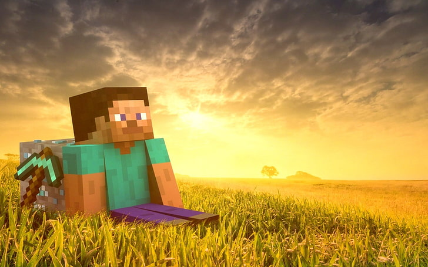

Venha construir seu mundo no Minecraft!
Jogar Minecraft pode ser uma forma de criar soluções inovadoras para problemas relevantes. Isso intensifica o desenvolvimento de competências sociais e emocionais, tais como: consciência social, autoconsciência, tomada de decisão, autogerenciamento e relacionamento social.

Adventure!
No modo Adventure, os blocos não podem ser destruídos livremente. Somente é possível destruir blocos utilizando as ferramentas corretas, picareta para pedra, machado para madeira, pá para terra e assim por diante. Dessa forma, é possível criar mapas e fases mais parecidas com as de jogos comuns.